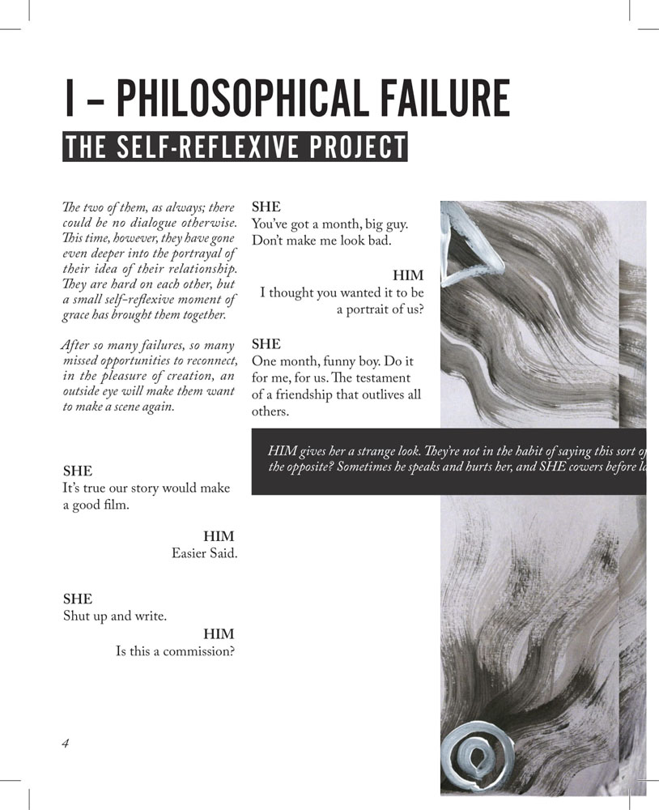
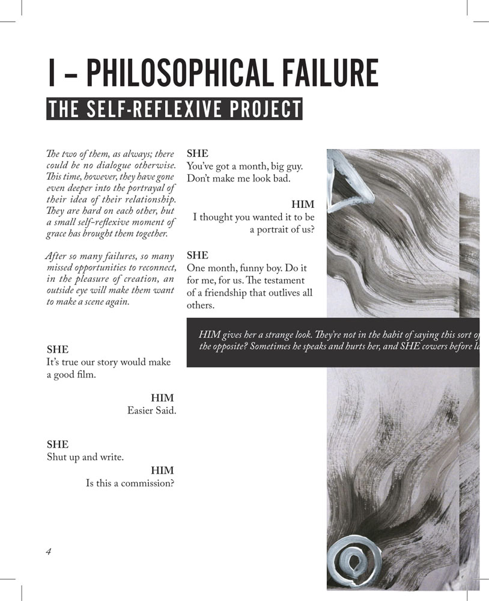
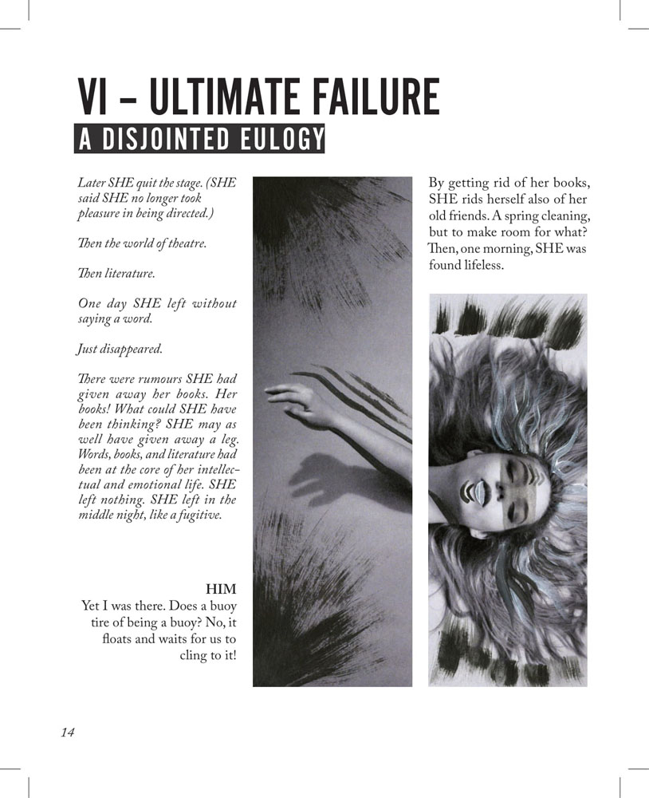
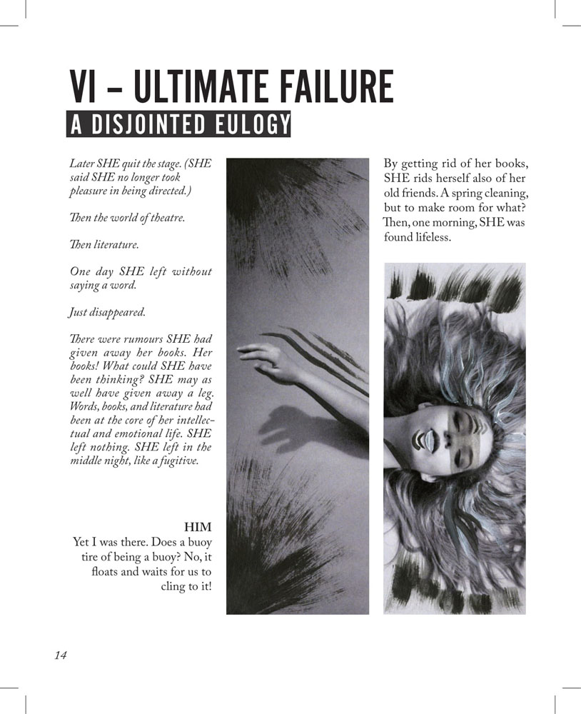

This project consisted of producing a conceptual book and supporting visuals for the experimental play "Failures: A Didascalogue” written by Dr. Louis Patrick Leroux. The play details the slow demise of a toxic relationship, laid out on a grand stage. To adequately represent the complex emotions of the play, I chose to photograph a model (Emme Geryk) moving through the various stages of trauma as the relationship unravelled.
I wanted the layout to reflect the narrative as best as possible, and emphasize the duality of the conversations within. By printing without colour I was able to add a harsh contrast between the "she" and "him" characters, highlighting certain passages in black. After shooting a variety of images to represent "she's" struggle, the images were painted over by artist Lauren Egli, to represent both "him's" unnatural expectations of "she" and the slow undermining of "she's" autonomy.
 

 
